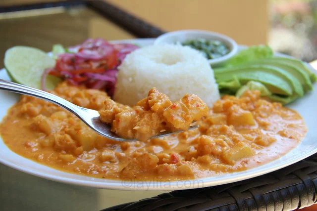

Guatita

La guatita es un plato típico de Ecuador a base de mondongo también conocido como librillo,
estomago o panza de res/vacuno, callos, menudo, entre otros nombres, se cocina el mondongo con papas en una rica salsa de mani o cacahuates.
Ingredientes para la preparacion:
- 2 libras de panza de res o mondongo, también conocido como librillo, callos o menudo (bien lavado y limpio)
- Cocinar bien la panza con limon, comino, y culantro
- Media taza de mantequilla de maní (cacahuate), sin sal
- 2 tazas de leche
- 3 cucharadas de mantequilla
- 1 taza de cebolla colorada o roja, picada
- 2 tazas de cebolla blanca, picada
- Medio pimiento (rojo o verde), picado
- 1 tomate, pelado, sin semillas y picado
- 4 dientes de ajo, picaditos
- 2 cucharaditas de achiote molido
- 1 cucharadita de comino molido
- 1 cucharadita de orégano seco
- 4 papas blancas, peladas y cortadas en cubitos pequeños
- Sal y pimienta al gusto
Preparacion:
- Cubra el mondongo con agua, sal y la mitad del jugo de limón, déjelo reposar durante 10 minutos, lávelo y repita el proceso otra vez. Lávelo bien la segunda vez.
- En una olla grande ponga el mondongo lavado con las diez tazas de agua, las ramitas de culantro, el ajo, la sal y el comino. Hágalo hervir, reduzca la temperatura y cocine a fuego lento hasta que el mondongo se haya suavizado, aproximadamente unas 2 horas.
- Retire el mondongo del agua y déjelo enfriar un poco, reserve 2 tazas del caldo donde se cocinó el mondongo.
- Mientras tanto diluya la mantequilla de maní con media taza de leche.
- Cuando el mondongo se haya enfriado píquelo en pedacitos muy pequeños.
- Prepare un refrito o sofrito con la mantequilla, achiote, comino, sal, orégano, cebolla, pimiento, tomate y ajo, cocine a fuego medio hasta que las cebollas estén suaves y casi transparentes, unos 5 minutos.
- Ponga el refrito, la leche y la mantequilla de maní en la licuadora y licúelos hasta obtener una salsa cremosa.
- Ponga la salsa licuada, las 2 tazas de caldo del mondongo, las papas picaditas y el mondongo picado en una olla grande, hágalo hervir, reduzca la temperatura y cocine a fuego lento hasta que las papas estén suaves y el líquido se empiece a volver espeso.
- Aplaste las papas un poco para espesar la salsa, pruebe y rectifique la sal. Agregue sal y pimienta al gusto.
- Sirva la guatita con arroz, cebollas encurtidas, rodajas de tomate, aguacate, y un buen ají.